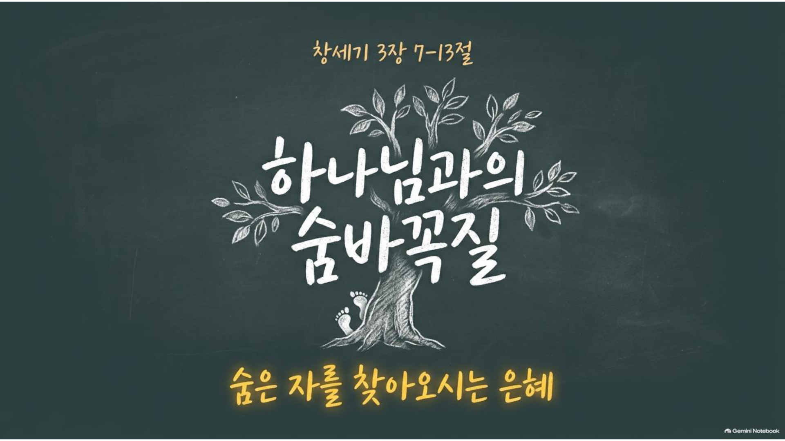

2026.08.23 주일 설교 묵상
하나님과의 숨바꼭질
잎사귀로 자신을 가리고, 나무 뒤에 숨고, 결국 남을 탓했던 사람을 끝까지 찾아오시는 은혜를 짚어보는 7일의 여정
주일 설교 다시보기
설교 영상은 준비되는 대로 업로드됩니다.
본문: 창세기 3장 7절 ~ 13절 (개역개정)
선악과를 먹은 아담과 하와가 제일 먼저 한 일은 회개가 아니라 숨는 것이었습니다. 무화과 잎을 엮어 몸을 가리고, 하나님이 주신 나무 뒤에 숨고, 붙잡히자 서로를 탓했습니다. 뱀은 "눈이 밝아져 하나님과 같이 되리라"고 약속했지만, 정작 눈이 밝아진 두 사람에게 보인 것은 자기 자신의 벌거벗음뿐이었습니다. 그러나 이 어두운 이야기 한가운데, 숨은 사람을 포기하지 않고 찾아오시는 하나님의 음성이 있습니다. "네가 어디 있느냐." 이번 주 묵상은 우리가 숨는 여러 방식과, 그럼에도 끝까지 찾아오시는 은혜를 하루씩 짚어봅니다.
선악과를 먹은 아담과 하와가 제일 먼저 한 일은 회개가 아니라 숨는 것이었습니다. 무화과 잎을 엮어 몸을 가리고, 하나님이 주신 나무 뒤에 숨고, 붙잡히자 서로를 탓했습니다. 뱀은 "눈이 밝아져 하나님과 같이 되리라"고 약속했지만, 정작 눈이 밝아진 두 사람에게 보인 것은 자기 자신의 벌거벗음뿐이었습니다. 그러나 이 어두운 이야기 한가운데, 숨은 사람을 포기하지 않고 찾아오시는 하나님의 음성이 있습니다. "네가 어디 있느냐." 이번 주 묵상은 우리가 숨는 여러 방식과, 그럼에도 끝까지 찾아오시는 은혜를 하루씩 짚어봅니다.
주일 설교 슬라이드
1 / 25

좌우 화살표를 눌러 슬라이드를 넘겨보세요.
매일 이렇게 새로워지세요
- 숨지 않기: 오늘 하나님 앞에서 가리고 있는 것이 무엇인지 정직하게 살펴봅니다.
- 나무 점검하기: 예배, 성취, 바쁨 중에 하나님과의 만남을 미루는 데 쓰고 있는 것이 있는지 봅니다.
- 남 탓 대신 자백하기: "그 사람 때문에", "이런 형편 때문에"라고 말해온 것을 "제가 잘못했습니다"로 바꿔봅니다.
- 찾아오시는 음성 듣기: "네가 어디 있느냐" 물으시는 하나님께 "주님, 여기 있습니다"로 답해봅니다.
요일별 묵상 여정
월요일
제목
성경구절